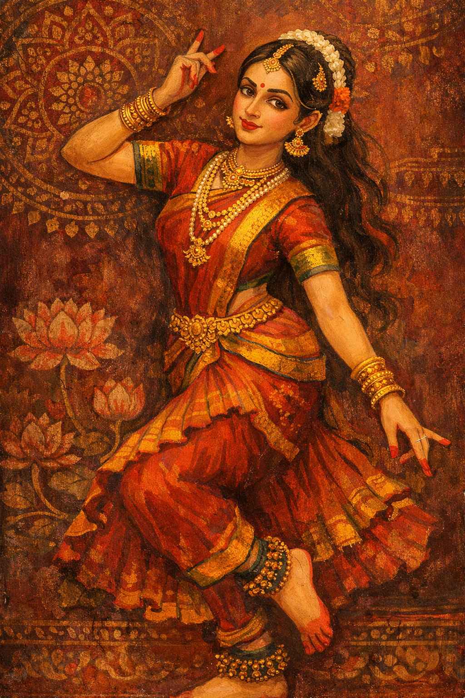
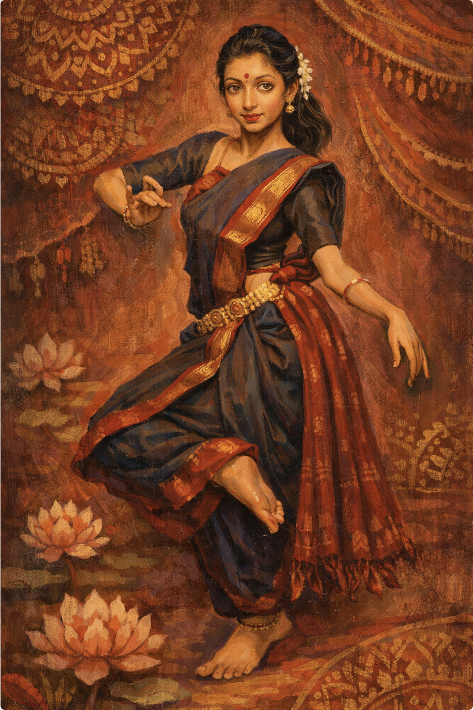
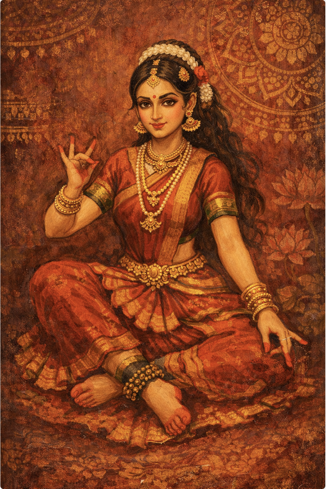

Bharatanatyam is one of the oldest and most popular classical dance forms in India, originating over 2,000 years ago in the temples of Tamil Nadu.

Standing Pose

Aranmandi

Sitting pose
The Meaning of "Bharatanatyam"
The name is often described as an acronym (a backronym) representing the four
most essential elements of the dance:
The Iconic Costume
The Bharatanatyam costume is designed to be both visually stunning and highly functional for the dancer’s deep squats and fast footwork.
The Evolution of Bharatanatyam
Ancient Origins
The dance finds its roots in the Natya Shastra, an ancient Sanskrit text on the performing arts. Traditionally, it was performed by Devadasis (servants of God)—women dedicated to temples to perform dances as a form of worship and spiritual offering.
The Tanjore Quartet
In the 19th century, four brothers known as the Tanjore Quartet (Chinnayya, Ponniah, Sivanandam, and Vadivelu) codified the dance. They structured the modern repertoire we see today, known as the Margam (the path), which defines the sequence of a performance.
Decline and Suppression
During the British Colonial era, the dance faced a significant decline. Social stigmas and Victorian-era laws led to the "Anti-Nautch" movement, which effectively banned temple dancing and pushed the art form toward the brink of extinction.
The Revival (Early 20th Century)
In the 1930s, the dance underwent a massive transformation and was rebranded as "Bharatanatyam" (moving away from the name Sadir). Key figures in this revival included:
Today, Bharatanatyam is celebrated globally. It is characterized by its fixed upper torso, bent legs (the Araimandi position), spectacular footwork, and a sophisticated vocabulary of sign language based on hands (Mudras) and facial expressions.
Modern Day